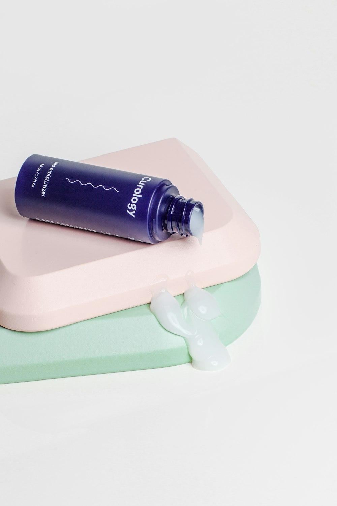
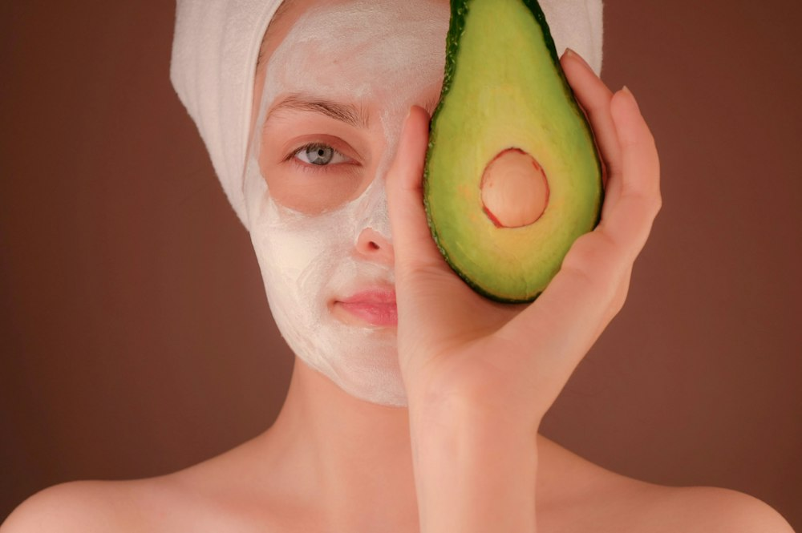
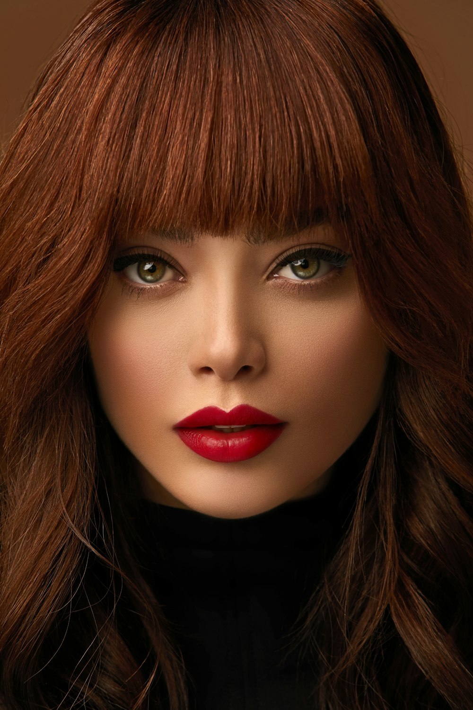
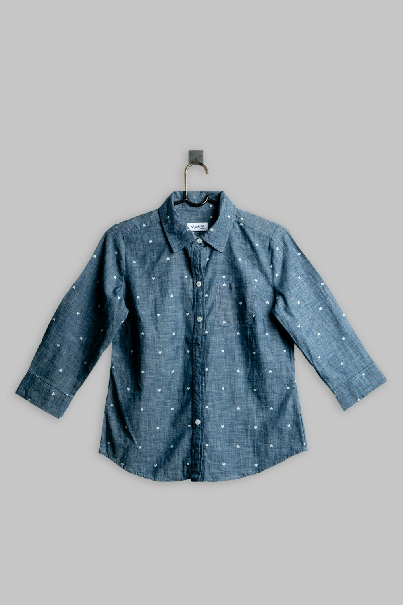
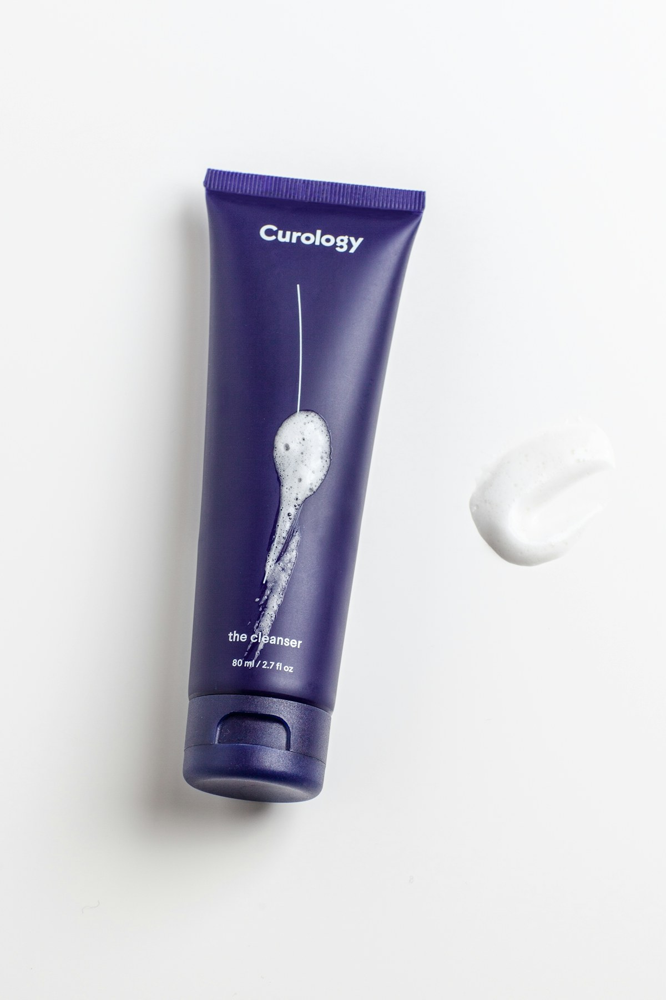

1
Avaliação da pele
Verificamos o tipo de pele, a sensibilidade e as áreas com cravos. Escolhemos os produtos a partir dessa avaliação.
10 minutosUma pele limpa, equilibrada e luminosa começa com cuidados feitos da forma certa. Conheça o protocolo da Lumina e agende sua avaliação.

A limpeza de pele remove impurezas, células mortas, cravos e espinhas. Em Águas Claras, usamos produtos conforme o seu tipo de pele e observamos a sensibilidade da região antes da extração.
Tudo começa com uma conversa e a avaliação da pele. Em seguida, aplicamos a emoliência para amolecer os poros, fazemos a esfoliação suave e a extração com material descartável. Finalizamos com máscara calmante, sérum e protetor solar.
A pele fica com textura mais uniforme. O procedimento não agride a barreira natural da pele.
Seis etapas em cerca de 75 minutos. Cada uma prepara a pele para a próxima.

Verificamos o tipo de pele, a sensibilidade e as áreas com cravos. Escolhemos os produtos a partir dessa avaliação.
10 minutos
Removemos maquiagem e resíduos. O vapor abre os poros e facilita a extração.
10 minutos
Retiramos células mortas com esfoliante suave, conforme a tolerância da sua pele.
10 minutos
Aplicamos emoliência para amolecer os cravos e removemos o conteúdo dos poros com material descartável.
25 minutos
A máscara acalma a pele depois da extração. O sérum repõe a hidratação.
15 minutos
Aplicamos protetor solar e explicamos os cuidados dos dias seguintes.
5 minutosFotos ilustrativas do ambiente e dos produtos usados na limpeza de pele em Águas Claras.



Preços de referência em Águas Claras. O valor final depende do tipo de pele e da quantidade de extração.
| Procedimento | O que inclui | Valor |
|---|---|---|
| Limpeza de pele básicaRosto, 60 minutos | Higienização, vapor, esfoliação e hidratação | R$ 120 |
| Limpeza de pele completaRosto, 75 a 90 minutos | Protocolo básico com extração de cravos e espinhas | R$ 160 |
| Limpeza com máscara calmanteRosto, 90 minutos | Protocolo completo com máscara e sérum | R$ 185 |
| Limpeza de pele + design de sobrancelhas90 minutos | Limpeza completa e modelagem das sobrancelhas | R$ 215 |
| Sessão de manutençãoAté 30 dias após a primeira sessão | Higienização, esfoliação leve e hidratação | R$ 95 |
Os valores podem mudar conforme a avaliação da pele. Confirme no agendamento pelo WhatsApp.
A limpeza de pele remove o que obstrui os poros e ajuda a prevenir acne.
A extração retira cravos e espinhas presos nos poros. A higienização remove resíduos de maquiagem e poluição.
A esfoliação retira células mortas. A pele fica com aspecto mais liso e poros menos aparentes.
Depois da esfoliação, o sérum e o hidratante são absorvidos com mais facilidade.
A extração e os produtos escolhidos para o seu tipo de pele reduzem o excesso de sebo. O resultado varia de pessoa para pessoa.
A limpeza periódica remove o que fecha os poros e reduz a formação de novos cravos.
Você sai com instruções de hidratação e proteção solar para manter o resultado entre as sessões.
Siga as orientações da profissional depois do procedimento:
Evite banho muito quente, piscina, praia e exposição solar direta. Não use maquiagem e não manipulate a pele com as mãos.
Use protetor solar diariamente, mantenha a hidratação e evite esfoliantes agressivos até a próxima avaliação.
Em peles oleosas ou com tendência a acne, a cada 15 dias. Em peles secas ou sensíveis, a cada 30 dias. Na avaliação, definimos a periodicidade para você.
A extração pode causar um leve desconforto, mas usamos emoliência e técnicas suaves para reduzir qualquer sensação.
Sim. Avise a equipe antes do agendamento para adaptarmos os produtos e o procedimento.
Conheça um pouco do cuidado que você encontra na nossa clínica em Águas Claras.




Envie uma mensagem pelo WhatsApp. Confirmamos a data e o horário.
Agendar pelo WhatsApp